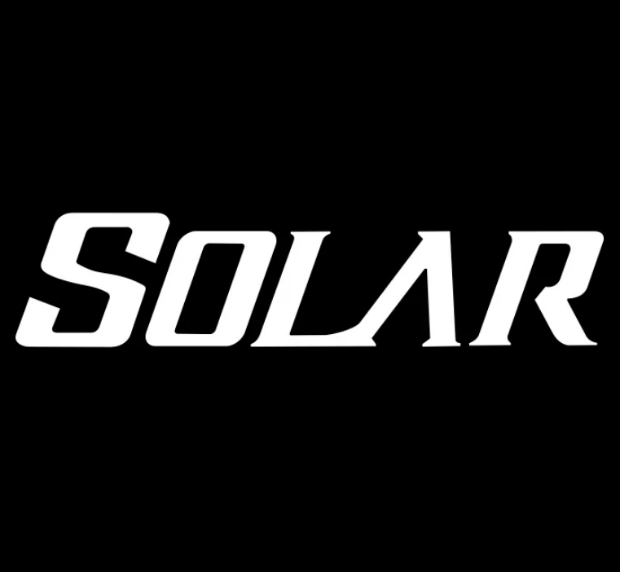
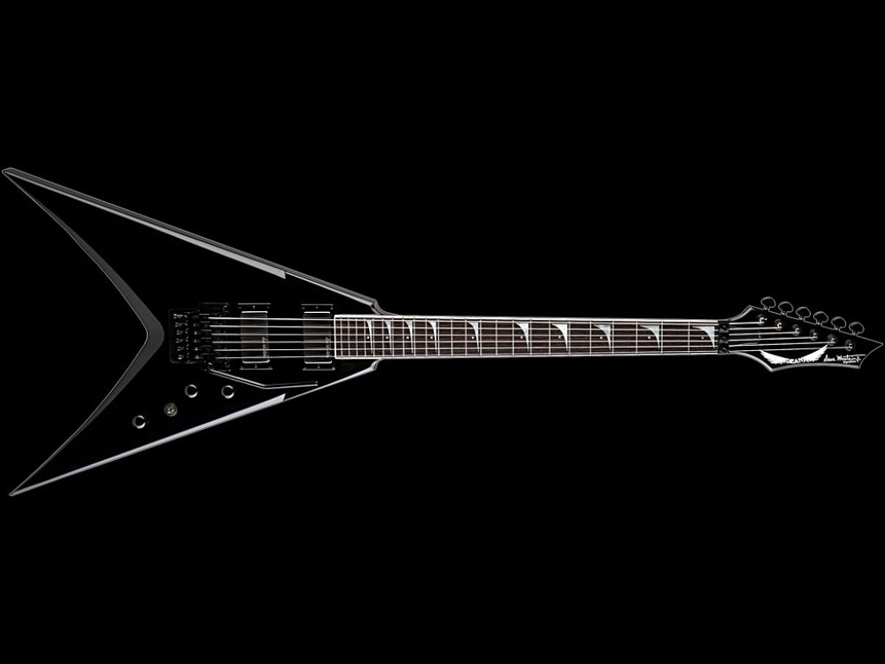
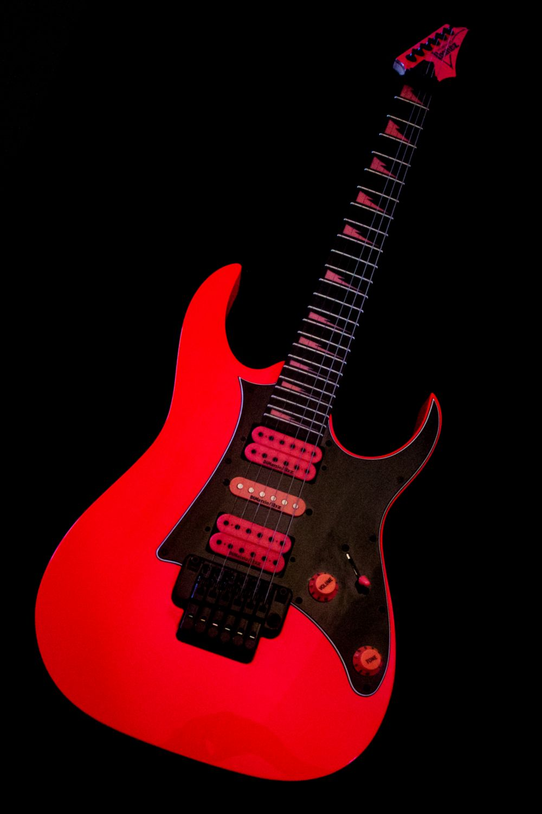
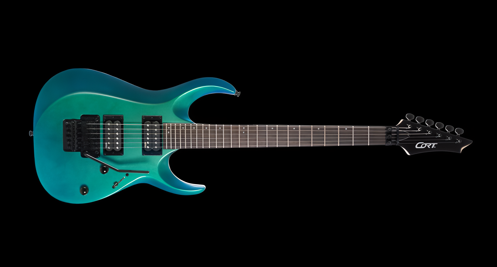

| Let's start with the definite advantages of Solar guitars | |
| I Feature: Benefit for the Guitarist | II Metal ergonomics: Deep cutaways and a thin neck for fast playing on the upper frets |
| III Duncan Solar pickups: Perfect clarity for fast riffs on high gain with zero muddiness | IV EverTune bridge: Mechanical system that locks tuning perfectly under any picking attack |

| Let's continue with the legendary advantages of Ibanez guitars | |
| I Super Wizard Neck: Famous ultra-thin and flat necks designed for maximum speed, effortless shredding, and ultimate hand comfort | II Legendary Tremolos: Edge and Lo-Pro Edge bridges provide incredible tuning stability even during the most aggressive dive bombs |
| III Ultimate Versatility: Advanced switching options and precise electronics deliver a vast tonal range, from crystal cleans to heavy high-gain | IV High-Tier Craftsmanship: Renowned Japanese build quality guarantees flawless fretwork, robust hardware, and reliable road-ready performance |

| Let's discover the exceptional advantages of Cort guitars | |
| I Unbeatable Value: High-quality components and premium features offered at an incredibly accessible price point for every musician | II Modern Ergonomics: Sleek body carves, compound radius fingerboards, and fast necks designed for ultimate comfort and playability |
| III Top-Tier Hardware: Equipped with genuine brand-name electronics and solid bridge systems for rock-solid reliability on stage | IV Versatile Sound: Carefully selected tonewoods and advanced wiring options deliver rich, punchy tones across any musical genre |

The Grand Conclusion
In conclusion, Solar, Ibanez, and Cort each represent outstanding craftsmanship tailored for specific musical needs. Solar guitars are absolute weapons for modern extreme metal, delivering unmatched clarity for heavy, down-tuned riffs. Ibanez remains the ultimate choice for virtuosos and shredders who demand lightning-fast necks and legendary tremolo systems. Meanwhile, Cort offers incredible versatility and unbeatable value, proving that high-tier performance can be highly accessible. To find your perfect instrument among these giants, you must evaluate three essential factors. First, consider the exact tonal character and electronic response that fits your musical direction. Second, focus on how the neck shape and ergonomics complement your unique playing style. Finally, choose the aggressive or sleek visual aesthetic that truly inspires your stage presence.
© 2026. This site was created with love by Ognev. All rights reserved.
Listen, play good music, and be happy!